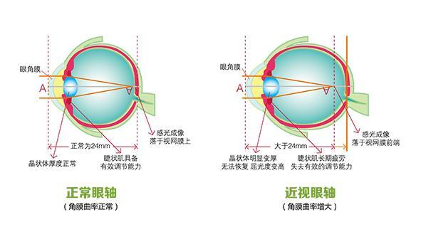
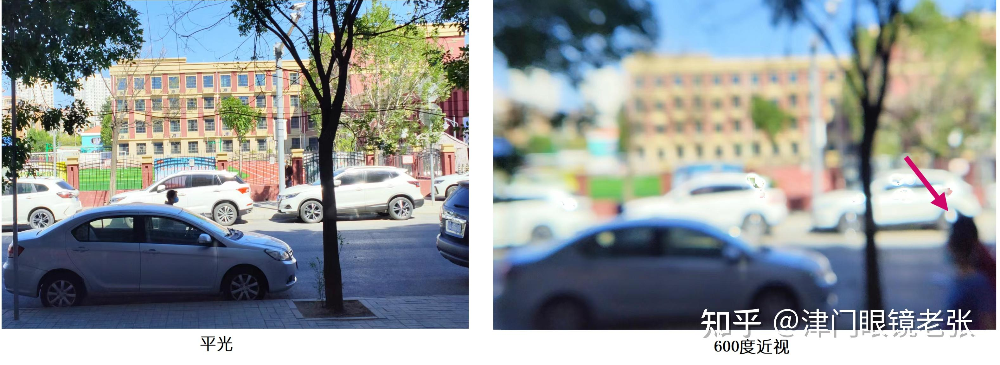

近视
危险程度
低风险
就医建议
定期进行视力检查
最佳就医时间
每半年检查一次视力
什么是近视？
近视（Myopia）是一种常见的屈光不正，由于眼球前后径过长或屈光系统屈光力过强，使平行光线在视网膜前聚焦，导致远处物体看不清楚。它是当今青少年中最普遍的视力问题之一。
关键特征：
- 远处物体模糊不清
- 眼轴增长
- 屈光度数进行性加深
- 用眼疲劳加重
近视分类
轻度近视
度数小于300度，视力轻微下降
中度近视
度数在300-600度之间，需要及时干预
重度近视
度数大于600度，风险较高
病理性近视
伴有眼底病变，需要密切关注
图示说明：
图1：近视眼发病机制示意图

上图展示了近视眼的发病机制
图2：正常眼睛与近视眼对比图

上图展示了正常眼睛与近视眼的对比
主要症状
视觉症状
远视物模糊
远处物体看不清楚
易疲劳
长时间用眼后疲劳加重
眯眼现象
经常不自觉眯眼看远处
头痛
可能伴有头痛症状
发展特点
初期
视力轻微下降，看远处物体不清
发展期
度数逐渐加深，需要定期更换眼镜
稳定期
通常在18-22岁后度数趋于稳定
矫正方法
光学矫正
- 框架眼镜
- 隐形眼镜
- 夜戴型角膜塑形镜
手术矫正
- 准分子激光手术
- ICL人工晶状体植入
- SMILE小切口手术
视功能训练
- 眼部肌肉训练
- 调节功能训练
- 双眼视功能训练
预防建议
用眼时间
每隔45分钟休息10分钟
户外活动
每天2小时户外活动
读写姿势
保持33厘米以上读写距离
电子设备
控制使用时间，保持适当距离